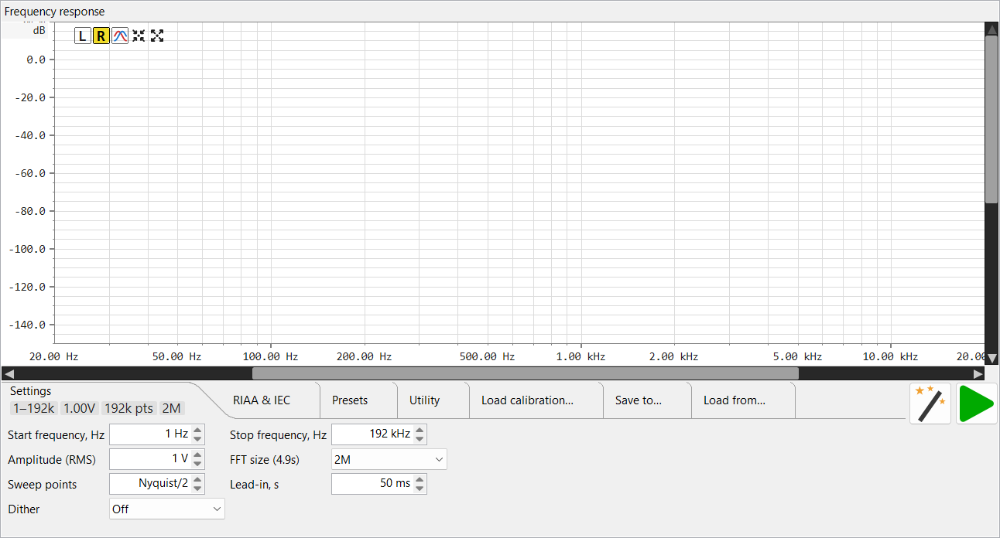

This page covers the frequency-response analyser's controls. For how it measures — a pre-rendered logarithmic sweep, deconvolved against the played reference to recover magnitude and phase across the whole band in one pass — see Theory of operation ▸ Frequency response and the log-sweep (Farina) summary.
Frequency response is a separate top-level tab (next to the combined Generator / Oscilloscope / FFT tab). It plays one swept sine from the output device, captures the return at the input, and plots the measured magnitude (and optional phase) of the device under test versus frequency — with an optional RIAA / IEC reference overlay and a measured-minus-reference compare curve for phono and filter work.

.frc /
CSV correction files to subtract a known interface response from the
measurement. Load calibration
tab.The button row sits above the plot.
| Button | Action |
|---|---|
| L (cyan) | Show the left channel's magnitude. Mutually exclusive with R — picking one hides the other. |
| R (yellow) | Show the right channel's magnitude. |
| Phase | Show / hide the phase trace and its right-hand ±180° axis. |
| Auto-setup | Fit the vertical (magnitude) window to the visible trace, leaving a little headroom above the highest point. Frequency span is left as-is. |
| Maximize | Reset to the default view — full frequency span (1 Hz to the Nyquist fraction) and +20 … −150 dB vertically. |
| Play (green) | Start a measurement sweep; while one runs the tooltip changes to "stop" and a progress dialog appears (see Running a measurement). |
Over the plot — wheel: pan the magnitude (vertical) axis; Shift+wheel: pan the frequency (horizontal) axis; Ctrl+wheel: zoom the magnitude axis (wheel up = zoom in); Ctrl+Shift+wheel: zoom the frequency axis (wheel up = zoom in). Both zooms are anchored at the cursor — the value (dB, or frequency) under the pointer stays fixed while the scale changes around it. This is the same convention used in the scope and FFT views. Each scrollbar pans one axis only — never zooms — and its thumb is sized by the view, so it tracks the zoom (it grows / shrinks as you scale). Click the empty track to page toward the pointer, or hold the button down to keep paging until the thumb reaches the cursor.
Moving the pointer inside the plot draws a dashed cross and a floating
box reading the frequency at the cursor (clipped at the Nyquist
fraction), the magnitude (dB) at the cursor's height on the left
axis (y = …), the L / R trace magnitude in dB,
the phase in
degrees when the phase trace is shown, and the compare Δ when
compare mode is on. It clears when the pointer leaves the plot.
The settings strip holds seven tabs. As elsewhere, the strip shows an
overflow » when more tabs exist than fit. The Settings, RIAA,
Calibration and Presets tabs carry tiles summarising their key values while
collapsed (Utility, Save and Load have none); hover a tile for a tooltip
describing the value.
| Control | Notes |
|---|---|
| Start frequency, Hz | Low end of the sweep. ≥ 1 Hz. |
| Stop frequency, Hz | High end of the sweep, up to the Nyquist fraction. |
| Amplitude (RMS) | Drive level sent to the DAC, in volts RMS against the DAC calibration; the tooltip toggles a dBV display. Accepts µV / mV / V / dBV. |
| FFT size (Ds) | Analysis length of the deconvolution, a power of two from 64k to 16M. Longer gives finer frequency resolution and more noise rejection at the cost of a longer sweep; the label shows the resulting sweep duration. |
| Sweep points | Number of frequency points generated for the sweep (8192 … 10M). The wheel jumps power-of-two presets plus a sample-rate derived "Nyquist/2" entry. |
| Lead-in, s | Silent / settle time before the sweep proper, so the chain is in steady state when measurement starts. |
| Dither | Dither depth applied to the generated sweep, Off or 1–31 bits — decorrelates quantisation error in the played signal. |

| Control | Notes |
|---|---|
| Show RIAA curve | Overlay the RIAA reference, aligned at 1 kHz. This gate enables the three controls below. |
| Reverse RIAA | Switch the reference between the record (encode) and playback (decode) curve — pick the one matching what your device does. |
| IEC amendment | Add the IEC subsonic high-pass (~20 Hz) to the reference. |
| Compare (measured − reference) | Plot the smoothed difference between the measurement and the RIAA reference around a 0 dB centreline, and auto-zoom to roughly 2 Hz – 25 kHz at ±2 dB. Needs an existing measurement. A blinking banner names the active reference. |

Save and recall complete Settings + RIAA configurations.
| Control | Notes |
|---|---|
| Name combo | Type a new preset name or pick an existing one. |
| Save | Store the current sweep + RIAA settings under that name; greyed out when the live settings already match the selected preset. |
| Load | Apply the selected preset to the live pane. |
| Delete | Remove the selected preset (with confirmation). |

| Button | Action |
|---|---|
| Screenshot | Save or copy a picture of the frequency-response plot. |
| Calibrate DAC full-scale | Reference-level DAC calibration helper (1 kHz / 1 V RMS). |
| Calibrate ADC full-scale | Reference-level ADC calibration helper (measures a 1 kHz reference at the input). |

A list of calibration rows. Each loaded, Active-checked
.frc / CSV file is de-embedded (subtracted) from the
measurement, so the plot shows the device under test with a known
interface response removed.
| Per-row control | Notes |
|---|---|
| Path | The loaded file, or "No calibration loaded". |
| Active | Engage / park this file's correction without unloading it — unchecked rows stay in the list for one-click re-use. |
| Load | Open-file button — pick a .frc or CSV correction file
for this row. |
| Clear (×) | Unload this row's file (keeps the Active flag). |
| Add (+) | Append another row to cascade a second correction. |
| Remove (−) | Delete this row. |

Save the current measurement as a stereo CSV (frequency, L/R magnitude in
dB, L/R phase in degrees). The Save button always prompts for a path,
pre-filled with a timestamped freqresp_….frc name.
Saving with no measurement reports "run a sweep first".
Auto-reload: if the file you save is already loaded as a calibration row in the FFT pane or in this Frequency Response pane (see Load calibration…), that row is re-read from disk automatically the moment you save — so re-measuring and overwriting a calibration takes effect immediately, with no need to browse for it again.

Load a previously saved stereo CSV back into the plot. A loaded file is treated as already corrected (it isn't re-calibrated), and a non-blinking banner shows its path at the top-right of the plot.
Press Play to sweep. Capture and generator playback are taken over for the run, a modal progress dialog shows a live RMS-versus-time meter, and the magnitude (and phase) plot refreshes when the deconvolution completes. The total time is the lead-in plus the sweep duration implied by the FFT size and sample rate. Because the reference is the exact pre-rendered sweep that was played, the result is the device's true transfer function, not an estimate — see Theory ▸ Frequency response.